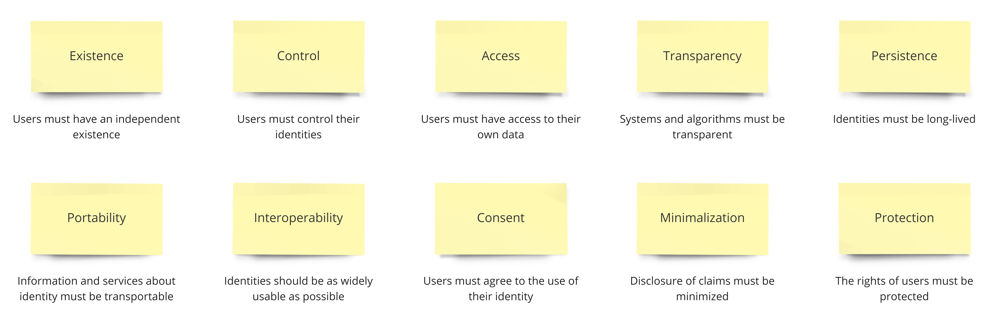
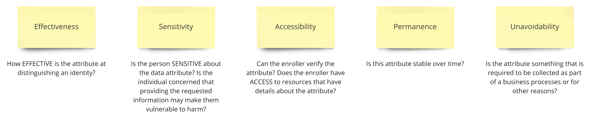
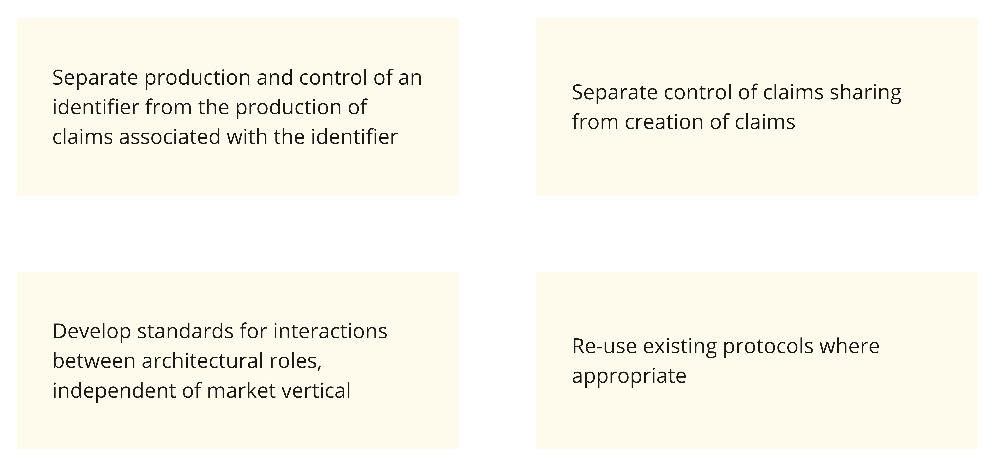

Self-sovereign identity is an identity that is created and maintained by the person and not controlled by any central authority.
In this model, an identity comprises of —
Claims - An identity claim is an assertion made by the person or business
Proofs - A proof is some form of document that provides evidence for the claim.
Attestations - An attestation is when a third party validates that according to their records, the claims are true.
What we seek with Self-Sovereign identity systems is an anonymising layer of distinct, purpose specific identity relationships with different counter-parties.
For this we can explore and develop the following notions of identity relationships —
Transactional Identities
A growing record of transactions of an entity or agent with another entity
Economic footprints which could be used as evidence for an attested identity
Many identities can be run in parallel by a single agent
Reputational Identity
A more formalised social identity
Identities built upon a history of third-party ratings of interactions
Can act as abstracts of Transactional Identities
Attested Identity
Identity by ‘accepted’ attestation of facts by third-parties such as an attendance record or certificate
An aggregated identity from proofs of different identity sources
Attested identity networks could build up ‘webs of trust’
Can involve preferential attachment to trusted webs for efficient trust routing
The principles of self-sovereignty
As compiled by Christopher Allen based on Kim Cameron’s “Laws of Identity”, Respect Network policy and W3C Verifiable Claims Task Force FAQ

Principles of self-sovereignty
With the basic framework in place, we can look into how a self-sovereign identity system can be achieved for India.
Proposed model for idem Identity System for India
The data pertaining to identity (demographics, biometrics etc.) should be owned by the people, thus eradicating the need for a centralised data repository.
The user would have the idem app on a smartphone or computer, some sort of “identity wallet” where identity data would be stored on the hard drive of the device, maybe backed up on another device or on a personal backup solution, but crucially not stored in a central repository. The identity wallet would start off empty with only a self-generated identification number (idem) derived from public key and a corresponding private key (like a password, used to create digital signatures) using a randomness algorithm that ensures that every number is unique. This is different from generating username-password using third party. The person can then use this identification number, along with identity claims, and get attestations from relevant authorities. These attestations can then be used as identity information. Since identity information like residential address can change from time to time, this system will eliminate the need to run to every organisation to update information and help in keeping the data updated and consistent across all identity relationships.
In case the person loses his mobile, one would need a PIN to access the data in the app. Also, there will be ways to raise a flag to prevent fraudulent transactions from the app.
In case the idem is stolen, another person cannot use it as an identity, because the actual identity lies in the attestations of the identity documents which were locally stored in the original phone.
In case the same user needs to log into the app from a different mobile, he would have to transfer all attested documents from his previous phone. The same account can be accessed from only a single device at a time.
As for the attesting agencies, they will also have their identity verified and attested by authorities that trust them. For example, banks and telecom companies can be attested by the particular Ministry of the Indian Government and can be authorised to attest identity claims of their customers.
Technological framework for idem
The system can be built using a Distributed Ledger system, that can generate Digital signatures and manage certificates that need to be issued, revoked or refreshed. The India Stack can be rebuilt using this technology to support the identity system.
The decentralised system would also require a decentralised database. The requirements to the ideal decentralized database that would be suitable for the decentralized applications needs can be summarised as —
Distribution and decentralization - as the applications are decentralized the database should be either.
Publicity – DLT allows anyone to contribute to the network. So, the database should do.
Byzantine Fault Tolerance and tolerance for other types of attacks in the public network - crucial to the credibility of the system
Sharding support - if we expect that an application will be popular and is going to store large amount of data then it would be great to make use of the total network power to increase maximum storage capacity. Full data replication on each node, of course, diminishes risk of data loss in the case of problems with a particular node. However, in a large network of hundreds of thousands of nodes full data replication on all nodes is too redundant, and the level of replication can be decreased in favour of increasing total storage capacity. That is if we have N nodes then each record should be replicated to m nodes, where m < N. It allows linearly scale total storage capacity with adding new nodes.
Ability to store structured data - the storage should be able to understand internal structure of the stored data to allow applications to link records to each other.
Ability to delete data - the database should be able to delete records that applications do not need any more to conserve space.
Secondary indexes, full-text search - applications should be able to perform fast searches of records taking into account their internal structure.
Syrian refugees could regain legal identities that were lost when they fled their homes
A few times a month, Bassam pushes a shopping cart through the aisles of a grocery store stocked with bags of rice, a small selection of fresh vegetables, and other staples. At the checkout counter, a cashier tallies the total, but Bassam doesn’t pay with cash or a credit card. Instead he lifts his head to a black box and gazes into the mirror and camera at its center. A moment later, an image of Bassam’s eye flashes on the cashier’s screen. Bassam collects his receipt—which reads “EyePay” and “World Food Programme Building Blocks” across the top—and walks out into the noonday chaos of the Zaatari refugee camp.
Though Bassam may not know it, his visit to the supermarket involves one of the first uses of blockchain for humanitarian aid. By letting a machine scan his iris, he confirmed his identity on a traditional United Nations database, queried a family account kept on a variant of the Ethereum blockchain by the World Food Programme (WFP), and settled his bill without opening his wallet.
Started in early 2017, Building Blocks, as the program is known, helps the WFP distribute cash-for-food aid to over 100,000 Syrian refugees in Jordan. By the end of this year, the program will cover all 500,000 refugees in the country. If the project succeeds, it could eventually speed the adoption of blockchain technologies at sister UN agencies and beyond. It will tackle a central problem in any humanitarian crisis: how do you get people without government identity documents or a bank account into a financial and legal system where those things are prerequisites to getting a job and living a secure life?
At the heart of such systems is a concept known as “self-sovereign identity.” It was popularized in 2016 by Christopher Allen, an American technologist, who outlined principles for a digital proof of existence owned by the individual. In such a scheme, identity would be portable and not dependent on any state or central authority. And the consensus is growing that a blockchain should be at its center.
idem solves Aadhar
Let us now look into how this system can solve the problems identified earlier in the current scenario.
Credibility of identity documents
In regular scenario, it is very difficult to verify the authenticity of documents like Birth certificates, driving license and so on, because they can be easily forged. One way to verify them is to get them attested by the issuing authority or a person/institute of considerable credibility. Also, just furnishing identity documents cannot establish the identity of a person with sufficient credibility. One way to do that is by physical verification (like in the case of Passports), or if the person is vouched for by multiple credible sources (like the place he works, or the bank where he holds accounts) as it builds up cumulative trust.
Using idem, identity claims will be attested by digital certificates, possibly time-bound. A digitally signed proof is as good as an attestation because the digital signature cannot be forged. Digital signatures have two properties that make them inherently better than paper document —
Digital signatures become invalid if there are any changes to the signed document. In other words, they guarantee the integrity of the document.
Digital signatures cannot be ‘lifted’ and copied from one document to another.
These attestations, provided by different agencies that have already verified the documents, will help in establishing trust on the UID of the person by building “webs of trust”, without the need for verifying them again.
The system will automatically root out fake identities that attempts to leach away government benefits and subsidies, because an identity in this system can survive only if it has sufficient credible attestations.
Authenticity of transactions
According to standard notions of digital authentication, a security principal (a user or a computer), while requesting access to a service, must provide two independent pieces of information - identity and authentication. Whereas identity provides an answer to the question “who are you?”, authentication is a challenge-response process that provides a “proof of the claim of identity”, typically using an authentication credential.
In the case of Prafulla purchasing a SIM card, the POS device cannot tell if it is a fraudulent transaction using stolen fingerprints and Aadhar number. However, using idem, the POS system would request authentication from Prafulla’s mobile app and he would respond to it using the appropriate attested identity that validates his identity claim. He doesn’t need to share any actual identity document with the service provider.
Access and control of user information
The ANSI/NASPO Identity Proofing and Verification (IDPV) Standard Development Project (ANSI/NASPO-IDPV-2013) identifies sets of core identity attributes across the dimensions of Name, Location, Time and Identifier that in most cases, allows for resolution to a single identity. In selecting a particular set, it recommends that the following factors be used to choose one particular attribute over another —

IDPV test to choose identification attributes
In the current Aadhar system, there are no checks regarding what information is actually required by the AUA and service providers. Also, they collect people’s identity information as a part of their KYC.
In the proposed model of idem, checks would be in place as to ensure that the institution gets only that information about a person that it actually needs, as per the IDPV standards and not what it seeks. Any unauthorised requests will be automatically declined by the system. In case the requests are validated, the user still can decide whether he wants to give access to that information. Also, all information requests and permissions will be time-bound and will expire if not used within a that time window. Additionally, the user will be able view and authorize identity authentication requests from various public / private entities, view all existing linkages of national identity with public / private agencies and update (data points shared or discontinue) these linkages.
The purpose of KYC will also be solved when the institutions can safely rely on the attestations and identity of the enrolled individuals, without the need for collecting and storing identity data separately. This will definitely reduce risks of data collections and breach of privacy.
Carrying forward the vision of Aadhar
Despite the various flaws in the implementation, Aadhar is one of the most ambitious identity projects undertaken. It has the potential to influence good governance. Some of its visions include —
Increasing access to financial services to improve economic prospects for poor individuals and communities.
Direct Benefit Transfers (DBTs) from Government to Citizens
Providing a comprehensive set of safety nets to India’s poor, including food subsidies, employment guarantees, and targeted cash transfers.
Developing a diverse set of uses in healthcare, education, and governance among others like Digitisation of Health and Education records, directed benefits and scholarships.
Rooting out corruption to improve the economy.
It is currently difficult to express banking account information, education qualifications, healthcare data, and other sorts of machine-readable personal information that has been verified by a 3rd party digitally or on the web. These sorts of data are often referred to as verifiable claims.
The idem system will incorporate the infrastructure of the Verifiable Claims Working Group, who are currently trying to make expressing, exchanging, and verifying claims easier and more secure on the Web.
Architectural goals for the Verifiable Claims work include
—

Architectural goals for the Verifiable Claims
Conclusion
Aadhaar or any trustworthy Unique Identity System (as in the one proposed) may not only enable efficient design, delivery, monitoring and evaluation of services in each domain individually, but may also offer the possibility of using modern data analytics and machine learning techniques for finding large scale correlations in user data. This, in turn, may facilitate an improved design of social policy strategies, including targeting, and early detection and warning systems for anomalies. For example, it may be tremendously insightful to be able to correlate education levels, family incomes and nutrition across the entire population or disease spread with income and education. More generally, it may enable macro level analysis from high frequency micro level data, econometric analysis, epidemiological studies, automatic discovery of latent topics and finding both predictive and causal relationships across multiple domains of the economy.
Indra and Vironchana Seek the ‘Self’
In the Hindu sacred text call the Chandogya Upanishad, is a story where Indra, the king of the gods and Virochana, the king of the demons seek knowledge of the true self at the ashram of Prajapati, the lord of all beings…
Prajapati asks, “Desiring what have you come to live here?”
Indra and Virochana reply, “We seek that self which is free from evil, free from old age, free from death, free from grief, free from hunger and thirst. He who has found out, he who understands that self, he obtains all worlds and all desires.”
Parajapati says, “That person which is seen in the eye, that is the self. That is the immortal, the fearless. Look at yourself in this pan of water. What do you see?”
“We see ourselves as we are in every detail, our clothes, our hair, even to the lines in our eyes and even the whirls on our fingers.”
Prajapati replies, “Thank you for your enrolment. Here is your Aadhaar number. It is free from evil, free from old age, free from death free from grief, free from hunger and thirst. Understanding this self you will obtain all worlds and desires.”
As Indra and Virochana go, Prajapati thinks, “Without perceiving, they go away not knowing the self. Who ever follows such a doctrine will surely perish.”
Virochana declares that Aadhaar is the immortal self which must be served to enjoy life and grow. He grows rich and powerful until Bali, his son, hacks UADAI and deletes Virochana’s Aadhaar profile. Aadhaar no longer authenticates for him and he perishes.
But Before reaching the gods, Indra realises that when the eyes grow cloudy and the fingerprints worn, this Aadhaar will lead one to perish. He comes back to Prajapati and asks, “Can you teach me about blockchain self-sovereignty instead?”
(And returned a third time to learn the true self also, the Atma!)